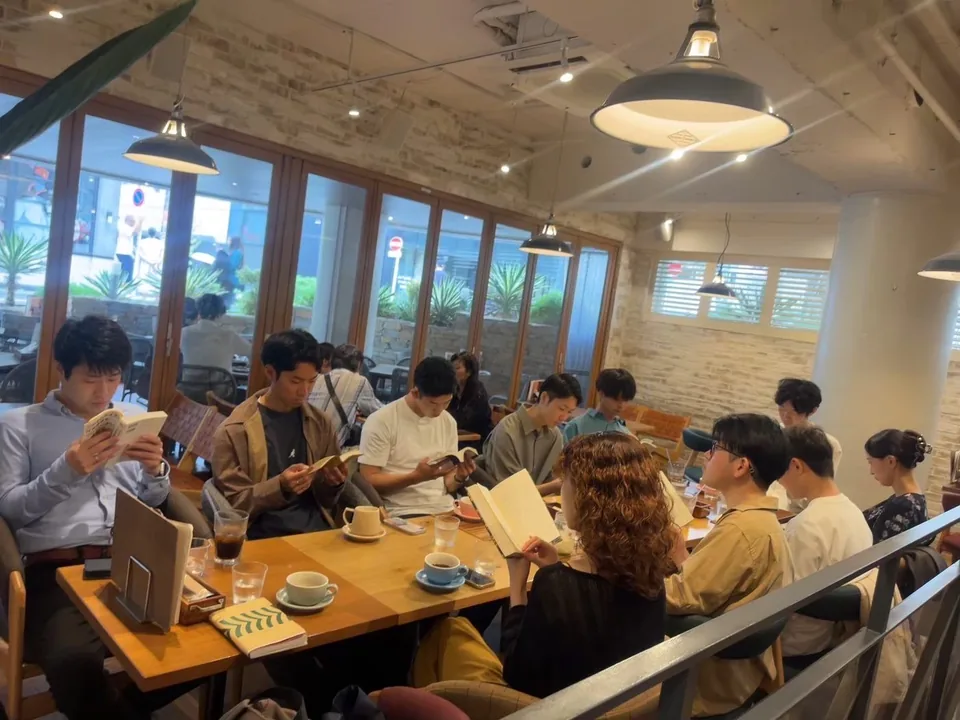

CAFE & COMMUNITY / TOKYO
東京で、カフェをきっかけに。
Unityの参加ガイド
Unityは東京・品川を中心に活動する、20代中心のカフェコミュニティです。コーヒーを飲みながら話す時間や、読書・ボードゲームなど、好きなことを一緒に楽しむ時間を大切にしています。

一人参加・初参加でも大丈夫？
「職場の外で知り合いを増やしたい」「カフェや読書が好き」「初めての場所では少し緊張する」。そんな方も、まずは気になる開催案内を確認してみてください。運営メンバーが参加者を迎え、それぞれのペースで交流できる場づくりを大切にしています。
人数、参加条件、当日の内容は開催ごとに異なります。確定した日程や参加費は、このページで推測せず、申込先の案内をご確認ください。
参加までの3ステップ
- 開催内容を確認する。 参加申込フォームやつなげーとの開催情報で、日程・会場・参加費・参加条件を確認します。カフェ会と読書・ゲームなどの企画は開催によって内容が異なります。
- 参加したい回へ申し込む。 申込先の手順に沿って必要事項を入力します。不明点は公式LINEから運営へご相談ください。
- 当日の案内を確認する。 集合場所、持ち物、変更やキャンセルの取り扱いは各開催の案内が基準です。事前に確認してからご参加ください。
日々の雰囲気を知るには
公式Instagramで活動の様子を、代表・運営紹介で迎えるメンバーを知ることができます。開催情報はつなげーとのUnityページもご確認ください。最新案内や相談は公式LINEへ。